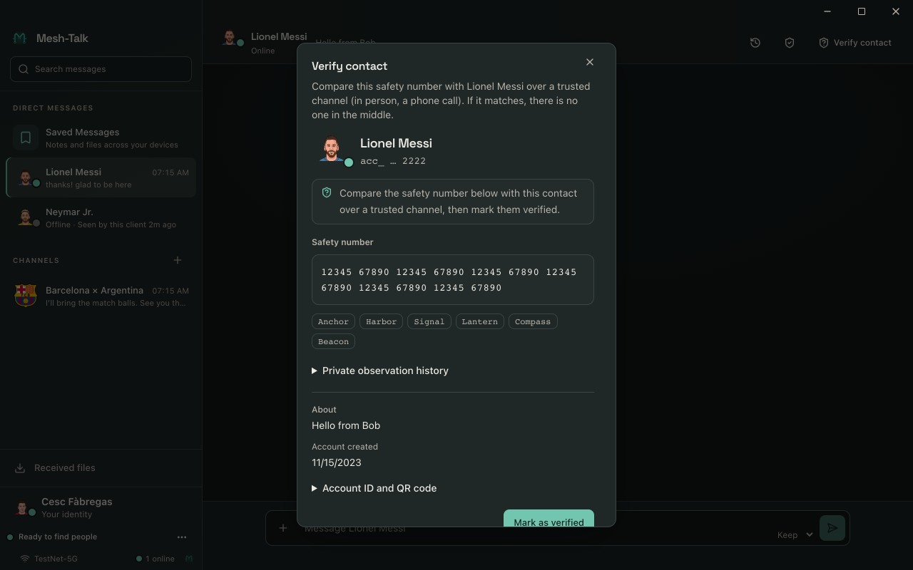
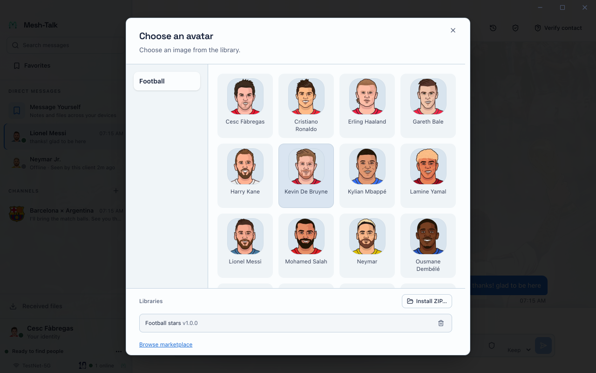
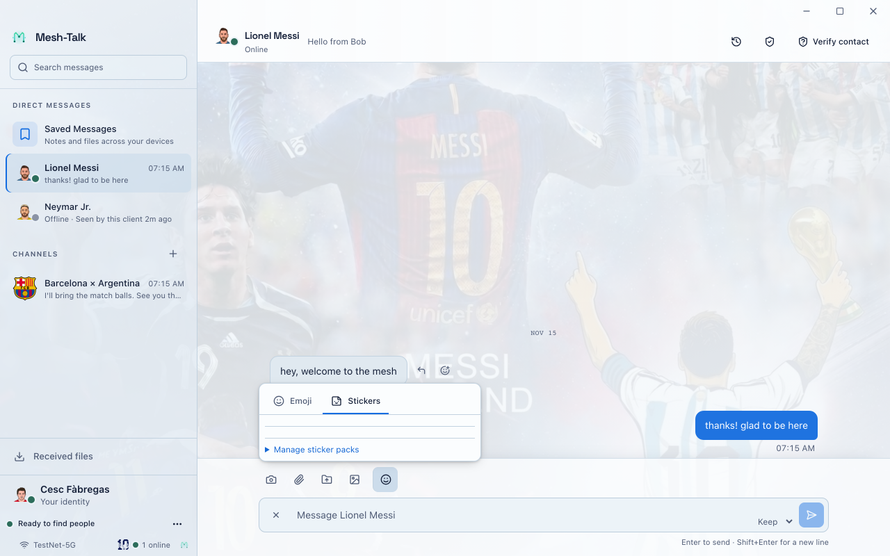

Your conversations.
On your terms.
Encrypted messaging across your networks. Start on a LAN, connect your sites, and keep your conversations close.
Other platforms and architecturesA closer look at Mesh-Talk

One place for your conversations. Actual app · demo conversations
No central server required End-to-end encrypted Open source
A little closer.
A lot more yours.
Talk directly on a LAN, without a central messaging service. Connect sites through routes you manage. Your peers hold the conversation.
See how it connectsLocal first. Connected by choice.
Decentralized synchronization combines direct links, optional relays, and shared recovery. Your peers hold the conversation; no vendor-operated messaging service is required.
Meet nearby peers
Signed discovery finds devices on the same LAN, even without internet. Peers connect directly and sync encrypted events.
Find nearby peopleReach another LAN
Use an existing route, such as your Tailscale network, to find reachable peers. Mesh-Talk verifies their identity separately.
Connect your sitesDeliver while away
A peer-operated post office holds recipient-encrypted events temporarily, subject to capacity and a 30-day maximum age.
Set up offline deliveryRecover together
Reconnect and request missing retained events from authorized peers. Group members can share a copy even when the original sender is unavailable.
Understand group recoveryAcross LANs, when you choose.
For a group spread across sites, equal post offices exchange signed presence from opted-in devices and forward encrypted mailboxes through reachable, identity-pinned relay paths.
Clients choose to share signed presence with their relay.
The network supplies reachability; Mesh-Talk verifies the peer.
Either relay can hold and forward encrypted messages.
Relays synchronize encrypted mailboxes while a path exists and retain bounded copies when it fails. Message and file payloads stay encrypted; calls need their own live signaling and media paths. Relays do not join IP subnets. Read the communication architecture and federation setup.
A conversation can outlast a connection.
Devices go offline. Routes return. Missing history can come from another authorized group member, not only from the original sender.
-
A member keeps a copy
Participating members retain signed messages. With sharing enabled, a member can serve the retained history to other authorized members.
-
A peer comes back online
Reachable peers reconcile missing events. The conversation catches up incrementally while preserving message identity and order.
-
Files follow their availability
Approved transfers can resume from available retained chunks. A file card can arrive before its contents; another eligible member may supply retained file data.
Recovery depends on permission, connectivity and retained data. Copies are bounded; a completed peer check does not prove every offline member has nothing more to share. Post-office custody is separate from recipient confirmation.
Read about file availabilityYou can check it's the right person.
Compare a contact's safety number over a trusted channel, then mark them as verified. Mesh-Talk warns when a verified identity changes. Message content is end-to-end encrypted; a relay still sees routing metadata.


Everyday messaging, with local control.
One-to-one and group conversations with replies, reactions, mentions, and search.
Explore conversationsSend media and files in encrypted chunks. Interrupted transfers can resume when an authorized source retains the content and receiving is approved.
Understand file sharingLink certified devices to one account. Choose which history, file cards and attachment contents synchronize over reachable device-to-device paths.
Link your devicesExport an encrypted backup with a separate recovery key for restoring an account.
Back up your accountChoose notification, app lock, visibility, and local retention settings.
Review privacy choicesChoose an interface theme and add optional avatar, theme, or sticker packs.
Explore customizationYour space.
A little more you.
Discover optional themes, avatar collections and sticker packs in the community Marketplace. Choose what to install, and make Mesh-Talk feel like your own.
Themes
Give your conversations a different setting.

Avatars
Find a face for your profile or group.


Stickers
Say a little more with a sticker.


Pick a pack. Make it part of your app.
Open its library in Mesh-Talk: Appearance for themes, your profile gallery for avatars, or Manage sticker packs for stickers. Install from the marketplace or import a local ZIP.
Packs are optional and installed separately. Recipients need a matching sticker pack to see its artwork; otherwise a fallback appears. Interface examples use demo data.
Create your own packGet Mesh-Talk.
A place on your desktop. A network you control.
Find the latest Stable packages on GitHub Releases.
Browse Stable releaseMesh-Talk for macOS
Apple silicon or Intel. Open About This Mac to check your chip. Each ZIP includes the DMG installer and checksums.
Open the release notes for first-run and archive verification steps.
Mesh-Talk for Windows
x64 or ARM64. Check System → About → System type. Each ZIP includes the Windows installers and checksums.
Open the release notes for first-run and archive verification steps.
Mesh-Talk for Linux
AppImage, deb, or rpm, packaged in one ZIP for each architecture. Choose x64 or ARM64 for your Linux machine.
Open the release notes for package details and archive verification steps.
Stable is recommended for everyday use. Want to try recent changes? Browse Nightly prereleases. Nightly builds may contain bugs. You can also choose Nightly under More → About → Update channel in the app. Back up your local data before trying Nightly or returning to an older Stable installation.
Releases start without optional packs or animated sticker assets. Install packs later from the marketplace or a local ZIP. Desktop installers are not signed with Apple Developer ID or a commercial Windows certificate. Release notes explain first-run steps and signed archive verification. Prefer to build it yourself? Build from source.
Build and run from source
Install stable Rust, Node.js 22+, and the Tauri prerequisites for your platform, then run:
git clone https://github.com/OctopusGarage/mesh-talk.git
cd mesh-talk
make dev
make tauri-devThis starts a development build. Read the build guide for packaging and setup.
Does it work without the internet?
Yes. Reachable peers on the same LAN can discover each other and exchange encrypted messages without internet access or a central server. Your network must allow local discovery and peer connections. Read the connection guide.
Link to this answerCan I talk to people on another network?
Yes, when an existing routed path connects you, or through opted-in, trusted post-office bridges. Mesh-Talk does not provide a VPN or join IP subnets. Explore cross-site connections.
Link to this answerWhat happens when someone is offline?
An optional peer-operated post office can temporarily hold recipient-encrypted events, subject to capacity and a 30-day maximum age. Authorized peers can also help recover retained group history after reconnection. Delivery depends on available paths and retained data. Understand delivery states.
Link to this answerWho can read my messages?
Message content is end-to-end encrypted. Compare a contact’s safety number through a trusted channel to verify their identity. Peers and relays still observe some connection and routing metadata. Learn about contact verification.
Link to this answerCan I use more than one device?
Link certified devices to one account, then choose which history, file cards, and attachment contents synchronize over eligible direct device paths. Keep an encrypted backup and its separate recovery key. Find device and backup guides.
Link to this answerIs Mesh-Talk free and open source?
Yes. Mesh-Talk is MIT licensed. You can inspect the code, build it yourself, and run your own optional post office. Explore the source on GitHub.
Link to this answerWhy does macOS say the app is damaged?
Current installers are not signed with Apple Developer ID. Follow the first-run steps after verifying the archive.
Read first-run instructions in the release notes
Link to this answer